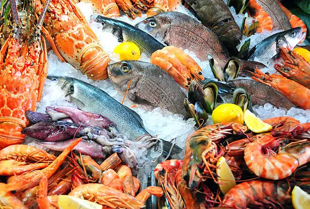

Fresh Ingredients
We source seafood daily to guarantee quality and freshness.
Seafood Restaurant

Ocean Shuck was founded with a passion for bringing the freshest seafood and unforgettable dining experiences to Bacolod City.
Ocean Shuck is a locally owned seafood restaurant dedicated to serving premium seafood dishes inspired by coastal flavors. Our chefs work closely with local fishermen and suppliers to ensure every meal is made with the freshest ingredients.
From grilled oysters and seafood boils to signature seafood platters, our menu celebrates the rich flavors of the ocean.
We source seafood daily to guarantee quality and freshness.
We strive to provide warm hospitality and memorable dining experiences.
We proudly support local fishermen and seafood suppliers.
We promote responsible sourcing and environmentally conscious practices.
With years of culinary experience, our head chef combines traditional seafood recipes with modern techniques to create dishes that delight every guest.